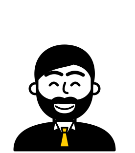
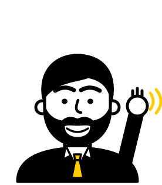
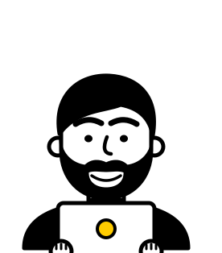
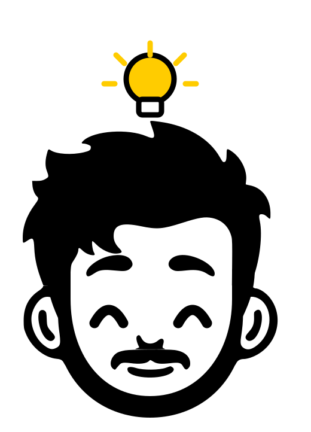

Calm
Default. Closed mouth, steady eyes. Headers, About, serious pages.

Smile
Friendly. Welcome states, success messages, social avatars.

Wave
Hello. Greetings, onboarding, newsletter sign-off.

Thinking
Working it out. Research, guides, "how it works" sections.

Builder
Hard hat on. Engineering wiki, project controls, construction content.

Searching
Looking closely. Search, empty results, research pages.

Building
At the keyboard. Developer wiki, build guides, behind-the-scenes posts.

Thumbs up
Approved. Success, confirmations, "good to go".

Idea
Lightbulb moment. Tips, announcements, new resources.

Glasses
Glasses on (they appear in the reference photo). Reading, research, detail work.